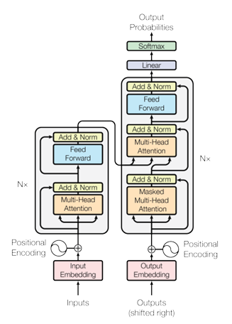
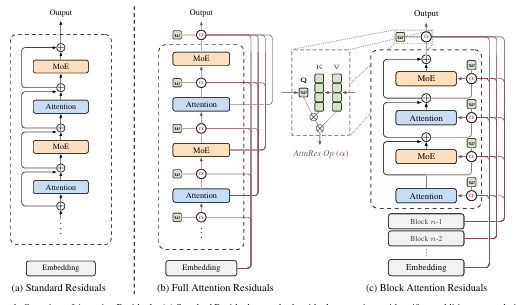

Abstract
The humble residual connection introduced by He et al. [He et al., 2016] for image recognition and canonised by the Transformer [Vaswani et al., 2017] has remained architecturally frozen for nearly a decade. Every modern LLM from GPT-4 to LLaMA to DeepSeek uses the same equation: $$h_l = h_{l-1} + f_{l-1}(h_{l-1})$$ In March 2026, the Kimi team released Attention Residuals [Kimi Team, 2026], proposing a principled replacement: replace the fixed additive accumulation with learned, input-dependent, softmax attention over all preceding layer outputs. The analogy is elegant, the Transformer solved the sequential bottleneck of RNNs; AttnRes applies the same cure to the depth dimension. This article traces the story from the original Transformer's residual connections, through the identified pathology, to the proposed fix, its math, its implementation, and its empirical results.
1. Background: The Transformer and Its Residuals
1.1. The Transformer Architecture (2017)
The 2017 paper "Attention Is All You Need" [Vaswani et al., 2017] was a watershed moment in NLP. By dispensing entirely with recurrence and convolutions and relying solely on self-attention, Vaswani et al. achieved state-of-the-art BLEU scores on WMT 2014 English-German (28.4 BLEU) and English-French (41.8 BLEU) while being dramatically more parallelisable than RNN-based models.
The core insight was to replace the sequential hidden state of RNNs where every token $h_t$ depends on $h_{t-1}$ preventing parallelism with direct pairwise attention between all positions:
$$\text{Attention}(Q, K, V) = \text{softmax}\!\left(\frac{QK^\top}{\sqrt{d_k}}\right)V \tag{1}$$Multi-Head Attention extends this by projecting queries, keys, and values into $h$ subspaces, computing attention in each, and concatenating:
$$\text{MultiHead}(Q, K, V) = \text{Concat}(\text{head}_1, \ldots, \text{head}_h)\, W^O $$ $$\quad \text{head}_i = \text{Attention}(QW_i^Q,\, KW_i^K,\, VW_i^V) \tag{2}$$The encoder stacks $N{=}6$ such layers, and each sub-layer (attention or FFN) is wrapped with a residual connection followed by layer normalisation:
$$\text{output} = \text{LayerNorm}(x + \text{Sublayer}(x)) \tag{3}$$1.2. Why Residual Connections Matter?
Residual connections, due to He et al. [He et al., 2016], were introduced for image classification to allow gradients to bypass transformations. The update rule is simply:
$$\mathbf{h}_l = \mathbf{h}_{l-1} + f_{l-1}(\mathbf{h}_{l-1}) \tag{4}$$Unrolling this recurrence yields:
$$\mathbf{h}_L = \mathbf{h}_1 + \sum_{i=1}^{L-1} f_i(\mathbf{h}_i) \tag{5}$$The gradient with respect to any intermediate hidden state $\mathbf{h}_l$ is:
$$\frac{\partial \mathcal{L}}{\partial \mathbf{h}_l} = \frac{\partial \mathcal{L}}{\partial \mathbf{h}_L} \cdot \prod_{j=l}^{L-1} \left( I + \frac{\partial f_j}{\partial \mathbf{h}_j} \right) \tag{6}$$The identity term $I$ is always preserved, providing a direct gradient highway from the loss to any layer regardless of depth, the key enabler of training networks with hundreds of layers.

2. The Problem: Limitations of Fixed Residual Connections
2.1. The Three Failure Modes of PreNorm Residuals
Modern LLMs universally adopt PreNorm [Xiong et al., 2020] (normalise before the sublayer, not after), because PostNorm causes gradient vanishing at depth. But PreNorm introduces a different problem. The standard update is:
$$\mathbf{h}_l = \mathbf{h}_{l-1} + f_{l-1}(\text{Norm}(\mathbf{h}_{l-1})) \tag{7}$$Since Norm scales inputs to bounded magnitude but residual accumulation is unbounded, the hidden state magnitude grows as $\|\mathbf{h}_l\| = O(L)$. Each layer's relative contribution therefore shrinks as depth increases. The Kimi team [Kimi Team, 2026] identify three concrete failure modes:
-
No selective access. Different layer types (attention vs. MLP) receive the same aggregated state, even though they may benefit from different weightings of earlier representations.
-
Irreversible loss. Information lost through aggregation cannot be selectively recovered by deeper layers. Empirically, a significant fraction of layers can be pruned with minimal performance loss [Gromov et al., 2025], which suggests that many layers are redundant.
-
Output growth. Deeper layers must learn ever-larger outputs to remain influential over the accumulated residual, which can destabilise training and exacerbate magnitude disparity.
2.2. The Depth–Sequence Duality
RNNs over sequences compress all prior token information into a single hidden state $h_t$; Residuals over depth compress all prior layer information into a single hidden state $\mathbf{h}_l$. The Transformer solved the sequence problem with attention. AttnRes solves the depth problem with the same mechanism.
Formally, residual connections perform depth-wise linear attention: when $\phi(q, k) = q^\top k$ (linear kernel), depth-wise attention collapses to $\mathbf{h}_l = \sum_i \phi(w_l, v_i)\, v_i = \sum_i v_i$, the standard additive residual. Existing refinements like Highway Networks [Srivastava et al., 2015] and Hyper-Connections [Zhu et al., 2025] all remain within this linear (or gated-linear) attention regime. AttnRes completes the transition to softmax attention over depth.
| Method | Weight type | Source(s) | Limitation |
|---|---|---|---|
| Residual [He et al., 2016] | Fixed = 1 | $\mathbf{h}_{l-1}$ | No adaptivity |
| ReZero [Bachlechner et al., 2020] | Learned scalar | $\mathbf{h}_{l-1}$ | Input-independent |
| Highway [Srivastava et al., 2015] | Dynamic gate | $\mathbf{h}_{l-1}$ | Only prev. state |
| DenseFormer [Pagliardini et al., 2024] | Learned scalar | All prior | Input-independent |
| mHC [Xie et al., 2026] | Dynamic matrix | $m$ parallel streams | Memory-heavy |
| AttnRes | Dynamic softmax | All individual layer outputs | — |
Table 1: Taxonomy of residual variants. AttnRes is the first to combine input-dependent weights with selective access to all individual earlier layer outputs.
3. Attention Residuals: A Unified View of Time and Depth: The Proposed Fix
The limitations of fixed residual connections are reminiscent of similar bottlenecks in sequence modeling — suggesting we seek similar solutions for the depth dimension.

3.1. The Depth–Time Duality
Like RNNs over time, residual connections compress all prior information into a single state $\mathbf{h}_l$ over depth. The Transformer improved upon RNNs by replacing recurrence with attention, allowing each position to selectively access all previous positions with data-dependent weights. AttnRes proposes the same methodology for depth:
$$\mathbf{h}_l = \alpha_{0 \to l} \cdot \mathbf{h}_1 + \sum_{i=1}^{l-1} \alpha_{i \to l} \cdot f_i(\mathbf{h}_i) \tag{8}$$where $\alpha_{i \to l}$ are layer-specific attention weights satisfying $\sum_{i=0}^{l-1} \alpha_{i \to l} = 1$. Unlike sequence length (which can reach millions of tokens), network depth is typically modest ($L < 1000$), making $O(L^2)$ attention over depth computationally feasible.
3.2. Full Attention Residuals
The attention weights are computed via a kernel function $\phi: \mathbb{R}^d \times \mathbb{R}^d \to \mathbb{R}_{\geq 0}$, adopting $\phi(\mathbf{q}, \mathbf{k}) = \exp(\mathbf{q}^\top \text{RMSNorm}(\mathbf{k}))$ with softmax normalisation over depth:
$$\alpha_{i \to l} = \frac{\phi(\mathbf{q}_l,\, \mathbf{k}_i)}{\sum_{j=0}^{l-1} \phi(\mathbf{q}_l,\, \mathbf{k}_j)} \tag{9}$$For each layer $l$, the query and key–value pairs are defined as:
$$\mathbf{q}_l = \mathbf{w}_l, \qquad \mathbf{k}_i = \mathbf{v}_i = \begin{cases} \mathbf{h}_1 & i = 0 \\ f_i(\mathbf{h}_i) & 1 \leq i \leq l-1 \end{cases} \tag{10}$$where $\mathbf{w}_l \in \mathbb{R}^d$ is a layer-specific learnable pseudo-query vector. The RMSNorm inside $\phi$ prevents layers with large-magnitude outputs from dominating the attention weights. The input to layer $l$ is then:
$$\mathbf{h}_l = \sum_{i=0}^{l-1} \alpha_{i \to l} \cdot \mathbf{v}_i \tag{11}$$Full AttnRes requires $O(L^2 d)$ arithmetic and $O(Ld)$ memory to store layer outputs. Since depth is far smaller than sequence length, the arithmetic cost is modest. However, at scale — where activation recomputation and pipeline parallelism are employed — both memory and communication overhead grow as $O(Ld)$, motivating the Block variant below.
3.3. Block Attention Residuals
Block AttnRes partitions the $L$ layers into $N$ blocks: within each block, layer outputs are reduced to a single representation via summation; across blocks, full attention is applied over only $N$ block-level representations. This reduces both memory and communication from $O(Ld)$ to $O(Nd)$.
Intra-Block Accumulation. The $L$ layers are divided into $N$ blocks of $S = L/N$ layers each. Each block is summarised by summing its layer outputs:
$$\mathbf{b}_n = \sum_{j \in \mathcal{B}_n} f_j(\mathbf{h}_j) \tag{12}$$Inter-Block Attention. For the $i$-th layer in block $n$, the value matrix attends over all completed block representations, with $\mathbf{b}_0 = \mathbf{h}_1$ ensuring the token embedding is always included as a source:
$$\mathbf{V} = \begin{cases} [\mathbf{b}_0, \mathbf{b}_1, \ldots, \mathbf{b}_{n-1}]^\top & i = 1 \text{ (first layer of block } n\text{)}\\ [\mathbf{b}_0, \mathbf{b}_1, \ldots, \mathbf{b}_{n-1}, \mathbf{b}_n^{i-1}]^\top & i \geq 2 \text{ (subsequent layers)} \end{cases} \tag{13}$$Efficiency. Since each layer now attends over $N$ block representations rather than $L$ individual outputs, memory reduces from $O(L)$ to $O(N)$ and computation from $O(L^2)$ to $O(N^2)$. The block count $N$ interpolates between two extremes: $N = L$ recovers Full AttnRes, while $N = 1$ reduces to standard residual connections. Empirically, $N \approx 8$ recovers most of the benefit across model scales, requiring only eight stored hidden states per token.
Figure 2: PyTorch-style pseudo code for Block Attention Residuals.
block_attn_res computes softmax attention over block representations
using a learned pseudo-query $\mathbf{w}_l$; forward is a single-layer
pass that maintains partial_block ($\mathbf{b}_n^i$, intra-block
residual) and blocks ($[\mathbf{b}_0, \ldots, \mathbf{b}_{n-1}]$,
inter-block history).
4. Infrastructure Design
Block AttnRes introduces additional system challenges compared to standard residual connections. For large-scale model training, block representations must be propagated across pipeline stages. Two key challenges arise: repeated access to accumulated block representations increases inference latency, and long-context prefilling amplifies the memory cost of caching block representations. These are addressed via cross-stage caching in training and a two-phase computation strategy in inference.
4.1. Training
For small-scale training, AttnRes adds negligible overhead — activations are already saved for backpropagation. Under large-scale distributed training, pipeline parallelism is the primary challenge. Consider an interleaved pipeline schedule with $P$ physical stages and $V$ virtual stages per physical stage, where each physical stage produces on average $N_p$ block representations of dimension $d$ per token. With $C = PV$ total chunks, naïvely transmitting all accumulated blocks at every transition incurs:
$$\text{Comm}_{\text{naïve}} = \sum_{j=1}^{C-1} jN_p \cdot d = \frac{C(C-1)}{2} N_p d \tag{14}$$Cross-stage caching eliminates this redundancy by caching blocks locally across virtual stages. Each transition conveys only the ${\sim}PN_p$ incremental blocks accumulated since the previous virtual stage, reducing total communication to:
$$\text{Comm}_{\text{cached}} = \underbrace{\frac{P(P-1)}{2} N_p d}_{\text{first virtual stage}} + \underbrace{(V-1)\, P^2 N_p d}_{\text{subsequent virtual stages}} \tag{15}$$This reduces peak per-transition cost from $O(C)$ to $O(P)$ — a $V\times$ improvement — enabling full overlap with computation during steady-state 1F1B. The measured end-to-end training overhead under pipeline parallelism is less than 4%.
4.2. Inference: Two-Phase Computation
During inference, block representations serve as a shared KV cache reused across layers. A naïve implementation requires $O(L \cdot N)$ memory accesses. Since pseudo-query vectors $\mathbf{w}_l$ are decoupled from the forward computation, all $S = L/N$ queries within a block can be batched into a single matrix multiplication — amortising memory access from $S$ reads to 1. The strategy proceeds in two phases:
-
Phase 1 — Parallel inter-block attention: Batch all $S$ queries against the cached block representations simultaneously, returning outputs and softmax statistics (max and log-sum-exp). Reduces reads from $S$ times to just once per block.
-
Phase 2 — Sequential intra-block attention: Compute attention sequentially using the evolving partial sum $\mathbf{b}_n^{i-1}$, then merge with Phase 1 outputs via online softmax. Admits kernel fusion with surrounding operations, further reducing I/O overhead.
4.3. Memory Access Cost Comparison
With the two-phase design, total per-layer memory access cost remains only $\left(\frac{N}{S} + 3\right)d$ reads and $2d$ writes — substantially lower than prior residual generalisations. The end-to-end inference latency overhead is less than 2% on typical workloads.
| Method | Operation | Read | Write | Symbolic I/O | Typical |
|---|---|---|---|---|---|
| Standard Residuals | Residual Merge | $2d$ | $d$ | $3d$ | 3 |
| mHC ($m$ streams) | Combined ops | $md + m$ | $m^2 + 2m$ | $(8m+2)d + 2m^2+4m$ | 34 |
| Residual Merge | $2md$ | $md$ | — | — | |
| AttnRes Full | Phase 1 + Phase 2 (amortised) | $(N-1)d$ | $d$ | $(S+N)d$ | 24 |
| AttnRes Block | Phase 1 + Phase 2 (amortised) | $\frac{N}{S}d$ | $d$ | $\left(\frac{N}{S}+5\right)d$ | 5.5 |
Table 1: Memory access cost per token per layer. Typical values: $L{=}128$, $N{=}8$, $S{=}L/N{=}16$, $m{=}4$. Block AttnRes achieves the lowest I/O cost of any method, at just 5.5d — only marginally above the 3d baseline of standard residuals.
5. Experiments
5.1. Architecture Details
The model backbone is Kimi Linear [Zhang et al., 2025], a Mixture-of-Experts (MoE) Transformer following the DeepSeek-V3 [DeepSeek-AI, 2025] design. It interleaves Kimi Delta Attention (KDA) and Multi-Head Latent Attention (MLA) layers in a 3:1 ratio, each followed by a MoE feed-forward layer. The only modification is the addition of AttnRes to the residual connections — all other components remain unchanged. AttnRes introduces only one RMSNorm and one pseudo-query vector $\mathbf{w}_l \in \mathbb{R}^d$ per layer — a negligible fraction of total parameter count. Crucially, all pseudo-query vectors are initialised to zero, ensuring uniform attention weights at the start of training.
5.2. Scaling Laws
Five model sizes are swept (194M to 528M activated parameters), each trained with three variants: a PreNorm baseline, Full AttnRes, and Block AttnRes ($N \approx 8$). Following standard practice, power-law curves are fitted as:
$$\mathcal{L} = A \times C^{-\alpha} \tag{16}$$where $\mathcal{L}$ is validation loss and $C$ is compute in PFLOP/s-days. Results:
Baseline: $\mathcal{L} = 1.891 \times C^{-0.057}$
Block AttnRes: $\mathcal{L} = 1.870 \times C^{-0.058}$
Full AttnRes: $\mathcal{L} = 1.865 \times C^{-0.057}$
All variants exhibit a similar scaling slope $\alpha$, but AttnRes consistently achieves a lower intercept $A$ — meaning it is uniformly better at every compute budget. The key headline: Block AttnRes matches the loss of the baseline trained with $1.25\times$ more compute. The gap between Full and Block AttnRes narrows with scale, shrinking to just 0.001 at the largest model size.
| # Act. Params | Tokens | $L_b$ | $d_\text{model}$ | Baseline | Block AttnRes | Full AttnRes | mHC(-lite) |
|---|---|---|---|---|---|---|---|
| 194M | 38.7B | 12 | 896 | 1.931 | 1.909 | 1.899 | 1.906 |
| 241M | 45.4B | 13 | 960 | 1.895 | 1.875 | 1.874 | 1.869 |
| 296M | 62.1B | 14 | 1024 | 1.829 | 1.809 | 1.804 | 1.807 |
| 436M | 87.9B | 16 | 1168 | 1.766 | 1.746 | 1.737 | 1.747 |
| 528M | 119.0B | 17 | 1264 | 1.719 | 1.693 | 1.692 | 1.694 |
Table 2: Baseline vs Block AttnRes ($N=8$) vs Full AttnRes vs mHC(-lite). Bold denotes best per-row result. $L_b = L/2$ denotes the number of Transformer blocks. All models trained with context length 8192.
5.3. Main Results
The largest model is the full Kimi Linear 48B configuration: 27 Transformer blocks (54 layers) with 8 out of 256 routed experts plus 1 shared expert, yielding 48B total / 3B activated parameters. Block AttnRes applies with 6 layers per block, producing 9 blocks plus the token embedding — 10 depth-wise sources in total.
Training recipe:
Pre-trained on 1.4T tokens following the Kimi Linear recipe
Optimiser: Muon [Liu et al., 2025] with WSD learning rate schedule
Global batch size: 8M tokens; context window: 4096 tokens
Stage 1: WSD pre-training on 1T tokens → Stage 2: mid-training on ~400B high-quality tokens → Stage 3: context extension to 32K tokens
5.4. Training Dynamics
Three diagnostic signals reveal why AttnRes works:
-
Validation loss: AttnRes achieves consistently lower loss throughout training, with the gap widening during the decay phase and resulting in a notably lower final loss.
-
Output magnitude: The baseline suffers from the PreNorm dilution problem — hidden-state magnitudes grow monotonically with depth, compelling deeper layers to learn increasingly large outputs. Block AttnRes confines this growth within each block, as selective aggregation at block boundaries resets the accumulation, yielding a bounded periodic pattern.
-
Gradient magnitude: The baseline's fixed unit weights provide no mechanism for regulating gradient flow, causing disproportionately large gradients in the earliest layers. AttnRes's learnable softmax weights introduce competition for probability mass, resulting in a substantially more uniform gradient distribution across depth.
5.5. Downstream Benchmark Performance
Block AttnRes matches or outperforms the baseline on every evaluated benchmark. Gains are most pronounced on multi-step reasoning and code generation tasks, consistent with the hypothesis that improved depth-wise information flow benefits compositional tasks.
| Category | Benchmark | Baseline | AttnRes | Δ |
|---|---|---|---|---|
| General | MMLU | 73.5 | 74.6 | +1.1 |
| MMLU-Pro | 52.2 | 52.2 | 0.0 | |
| GPQA-Diamond | 36.9 | 44.4 | +7.5 | |
| BBH | 76.3 | 78.0 | +1.7 | |
| ARC-Challenge | 64.6 | 65.7 | +1.1 | |
| HellaSwag | 83.2 | 83.4 | +0.2 | |
| TriviaQA | 69.9 | 71.8 | +1.9 | |
| Math & Code | GSM8K | 81.7 | 82.4 | +0.7 |
| MGSM | 64.9 | 66.1 | +1.2 | |
| Math | 53.5 | 57.1 | +3.6 | |
| CMath | 84.7 | 85.1 | +0.4 | |
| HumanEval | 59.1 | 62.2 | +3.1 | |
| MBPP | 72.0 | 73.9 | +1.9 | |
| Chinese | CMMLU | 82.0 | 82.9 | +0.9 |
| C-Eval | 79.6 | 82.5 | +2.9 |
Table 3: Performance comparison of AttnRes with the baseline after the same pre-training recipe. AttnRes wins on every benchmark. The largest gains are on multi-step reasoning (GPQA-Diamond: +7.5) and math/code tasks.
5.6. Ablation Study
Ablations on the 16-layer model validate key design choices. All models share identical hyperparameters and compute budget.
| Variant | Val. Loss |
|---|---|
| Baseline (PreNorm) | 1.766 |
| DenseFormer (fixed scalars, all prior layers) | 1.767 |
| mHC (dynamic matrix, $m$ streams) | 1.747 |
| Full AttnRes | 1.737 |
| ↳ w/ input-dependent query | 1.731 |
| ↳ w/ input-independent mixing | 1.749 |
| ↳ w/ sigmoid (instead of softmax) | 1.741 |
| ↳ w/o RMSNorm on keys | 1.743 |
| SWA — Sliding Window ($W = 1 + 8$) | 1.764 |
| Block AttnRes ($S=4$, $N=8$) | 1.746 |
| ↳ w/ multihead ($H=16$) | 1.752 |
| ↳ w/o RMSNorm on keys | 1.750 |
Table 4: Ablation study on 16-layer model. Key takeaways below.
Key takeaways from ablations:
DenseFormer gets zero gain (1.767). Cross-layer access alone is not enough — the weights must be input-dependent. This isolates content-dependent selection as the critical ingredient.
Softmax > sigmoid. Replacing softmax with sigmoid degrades performance (1.741 vs 1.737). Softmax's competitive normalisation forces sharper, more decisive selection among depth sources.
RMSNorm on keys is essential. Removing it hurts both Full (1.743) and Block (1.750) AttnRes, as layers with large magnitude outputs dominate the softmax unfairly.
Multihead depth attention hurts (1.752). The optimal depth-wise mixture is largely uniform across channels — when a layer's output is relevant, it is relevant as a whole.
Sliding-window (SWA) is not enough (1.764). Selectively accessing distant layers matters more than attending to many nearby ones.
6. Discussions
6.1. Sequence–Depth Duality
Residual connections propagate information over depth exactly as RNNs propagate over time. Test-Time Training (TTT) formalises the sequence side: each recurrent step is gradient descent on a self-supervised loss:
$$\mathbf{W}_t = \mathbf{W}_{t-1} - \eta\,\nabla\ell(\mathbf{W}_{t-1};\, \mathbf{x}_t) \tag{17}$$When $f$ is linear, this reduces to vanilla linear attention $\mathbf{S}_t = \mathbf{S}_{t-1} + \mathbf{k}_t\mathbf{v}_t^\top$. The standard residual exhibits the same additive form along depth. Methods like Highway Networks, mHC, and DDL all refine the recurrent update while remaining within the recurrence paradigm. AttnRes goes a step further — replacing depth-wise recurrence with direct cross-layer attention, just as Transformers replaced temporal recurrence with self-attention.
6.2. Residual Connections as Structured Matrices
Every residual variant can be expressed as $\mathbf{h}_l = \sum_{i=0}^{l-1} M_{i \to l}\,\mathbf{v}_i$ for a lower-triangular depth mixing matrix $\mathbf{M} \in \mathbb{R}^{L \times L}$. The key insight is that existing residual variants correspond to depth-wise linear attention, while AttnRes performs depth-wise softmax attention:
Standard residual: $\mathbf{M}$ is all-ones lower-triangular — rank-1 semiseparable.
Highway: $\mathbf{M}$ is 1-semiseparable with input-dependent gates — still linear attention.
mHC: $\mathbf{M}$ is $m$-semiseparable — linear attention with matrix-valued states.
Full AttnRes: $\mathbf{M}$ is dense, rank-$L$ — depth-wise softmax attention, the most expressive.
The structured-matrix perspective also reveals depth-wise attention sinks in AttnRes — certain layers consistently attract high weight regardless of input, mirroring the sequence-wise attention sinks in standard Transformers.
7. Conclusion
Inspired by the duality between sequence and depth, AttnRes replaces fixed, uniform residual accumulation with learned, input-dependent, depth-wise softmax attention. Its scalable variant Block AttnRes — using $N \approx 8$ blocks — recovers most of the gains of Full AttnRes while serving as a practical drop-in replacement with less than 4% training overhead and less than 2% inference latency overhead. Validated through scaling laws, ablations, and a 48B-parameter model pre-trained on 1.4T tokens, AttnRes consistently improves over standard residual connections across all evaluated tasks — equivalent to a $1.25\times$ compute advantage for free.
References
- He, K., Zhang, X., Ren, S., and Sun, J. Deep Residual Learning for Image Recognition. CVPR, 2016. arXiv:1512.03385
- Vaswani, A., et al. Attention is All You Need. NeurIPS, 2017. arXiv:1706.03762
- Xiong, R., et al. On Layer Normalization in the Transformer Architecture. 2020. arXiv:2002.04745
- Kimi Team. Attention Residuals. 2026. arXiv:2603.15031
- Gromov, A., et al. The Unreasonable Ineffectiveness of the Deeper Layers. 2025. arXiv:2403.17887
- Srivastava, R. K., Greff, K., and Schmidhuber, J. Highway Networks. 2015. arXiv:1505.00387
- Pagliardini, M., et al. DenseFormer: Enhancing Information Flow in Transformers via Depth Weighted Averaging. 2024. arXiv:2402.02622
- Xie, Z., et al. mHC: Manifold-Constrained Hyper-Connections. 2026. arXiv:2512.24880
- Liu, J., et al. Muon is Scalable for LLM Training. 2025. arXiv:2502.16982
- Zhang, Y., et al. Kimi Linear: An Expressive, Efficient Attention Architecture. 2025. arXiv:2510.26692
- DeepSeek-AI. DeepSeek-V3 Technical Report. 2025. arXiv:2412.19437
- Bachlechner, T., et al. ReZero is All You Need: Fast Convergence at Large Depth. 2020. arXiv:2003.04887
Cite This Article
If you found this article useful, please cite it as:
BibTeX
@article{vikram2026attnres,
author = {Vikram},
title = {Attention Residuals: Fixing a Decade-Old Bottleneck in Deep Networks},
year = {2026},
month = {March},
url = {https://vikrampande7.github.io/blog/AttnRes.html},
note = {Blog post}
}